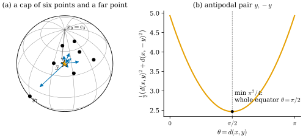
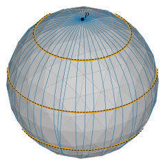
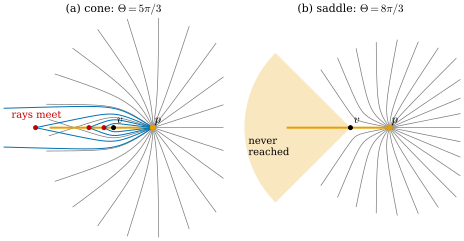

44.4 Exponential Map, Logarithm Map, and Karcher Mean
Goals
- exponential map과 logarithm map을 smooth surface에서 정의하고, unit sphere의 닫힌 식과 cylinder에서 계산할 수 있다.
- \(\grad\tfrac12d(\cdot, y)^2 = -\log_x(y)\)를 sphere에서 증명하고, 그것으로 Karcher mean의 조건 \(\sum_i\log_x(y_i) = 0\)과 fixed-point algorithm을 유도할 수 있다.
- discrete straightest geodesic으로 discrete exponential map을 정의하고, cone vertex가 injectivity radius를 제한하고 saddle vertex가 surjectivity를 깨는 것을 증명할 수 있다.
Prerequisites
- Section 44.3: discrete straightest geodesic Definition 44.3.5, initial value problem Proposition 44.3.6, tracing(Implementation 상자).
- Section 44.2: cut locus와 injectivity radius Remark 44.2.8, cone과 saddle 위의 거리 Figure 44.2.3. Section 44.1: energy의 first variation (44.1.2), Proposition 44.1.9.
- Tour: exponential map과 logarithm map, unit sphere의 닫힌 꼴 (0.8.5), 회전의 평균 상자 Section 0.8.
Motivation
Section 44.3에서 한 점과 한 방향을 주면 straightest geodesic이 하나로 정해졌다(Proposition 44.3.6). 이제 점은 고정하고 방향과 길이를 모두 바꾸어 보자. 한 점에서 모든 방향으로 같은 속력으로 나아가는 geodesic들의 끝은 파면(wavefront)을 이룬다. 슬라이드는 연속한 파면이 vertex를 만나면 어떻게 행동해야 하는지를 묻는다 [CMU-DDG L21–22] slide 41. 이 “방향과 길이 → 도착점”의 map이 exponential map이고, 그 역인 logarithm map은 “이 점은 저기서 어느 방향으로 얼마나 떨어져 있는가”를 tangent vector로 준다. 휜 공간의 점을 tangent plane의 vector처럼 다루게 해 주는 도구다(slide 44). 그 첫 응용이 휜 공간 위의 평균이다.
The Exponential Map and the Logarithm Map
boundary가 없는 smooth surface \(S\)의 점 \(p\)와 \(v \in T_pS\)에 대하여, \(\gamma(0) = p\), \(\gamma'(0) = v\)인 geodesic \(\gamma_v\)는 \(0\) 근처에서 하나로 정해진다. 이것은 geodesic equation이 2차 ODE라는 것(Section 44.5)과 ODE 해의 존재·유일성(Theorem 2.7.6)에서 나온다. compact surface(예: sphere, torus)나 평면, cylinder처럼 complete한 surface에서는 \(\gamma_v\)가 모든 \(t\)에서 정의된다(받아들이는 사실, Section 23.5). \(\gamma_v\)의 속력은 \(\abs v\)로 일정하고(Proposition 44.1.9), \(\gamma_{cv}(t) = \gamma_v(ct)\)이다.
Remark 44.4.1 (the exponential map in this chapter). complete surface \(S\)의 점 \(p\)에서 \(\exp_p(v) := \gamma_v(1)\)로 정한 map \(\exp_p\colon T_pS \to S\)를 exponential map(지수사상)이라 한다(Tour Section 0.8, 정식 정의는 Section 23.2와 Section 10.6). \(\exp_p(v)\)는 \(p\)에서 \(v/\abs v\) 방향으로 geodesic을 따라 길이 \(\abs v\)만큼 간 점이다(slide 42). \(T_pS\)의 원 \(\abs v = \rho\)의 image가 반지름 \(\rho\)의 파면이다.
Example 44.4.2 (the unit sphere and the cylinder). (a) unit sphere에서 \(\exp_p(v) = \cos\abs v\,p + \sin\abs v\,v/\abs v\)이다((0.8.5)). 실제로 \(t \mapsto \cos t\,p + \sin t\,\hat v\)(\(\hat v = v/\abs v\))는 \(p\)를 지나 \(\hat v\)를 처음 velocity로 갖는 great circle이고, 가속도가 \(-\)(위치)라 sphere에 수직이므로 geodesic이다(Exercise 44.1.3). 반지름 \(\rho\)의 원의 image는 \(p\)를 극으로 하는 colatitude \(\rho\)의 circle of latitude이고, \(\rho = \pi\)에서 원 전체가 대척점 \(-p\)로 간다. (b) 반지름 \(1\)인 cylinder \(\mathbf{x}(u, v) = (\cos u, \sin u, v)\)에서 \(p = \mathbf{x}(0, 0)\)이고 \(v = a\,\mathbf{x}_u + b\,\mathbf{x}_v\)이면 \(\exp_p(v) = \mathbf{x}(a, b)\)이다. 평면을 감는 local isometry(Example 44.1.6)가 직선을 geodesic으로 보내기 때문이다. \(\exp_p\)는 \(\abs a \lt \pi\)인 띠에서 injective이고 \(a\)와 \(a + 2\pi\)는 같은 점으로 간다.
Verification: verify/v-44-4-exp-log-karcher.py
거꾸로 가는 map을 생각하자. \(\exp_p\)는 surjective인가? complete surface에서는 그렇다. \(p\)와 \(q\)를 잇는 shortest 곡선이 있고(Hopf–Rinow theorem, 진술만, Section 23.5), 그것은 geodesic이므로(Corollary 44.1.10) 처음 방향에 길이를 곱한 vector \(v\)가 \(\exp_p(v) = q\)를 만족한다(slide 43). 그러나 그런 \(v\)가 하나라는 보장은 없다(slide 44). 그래서 가장 짧은 것을 고르고, 그것이 하나인 곳에서만 역을 정한다.
Definition 44.4.3 (logarithm map). complete surface \(S\)의 점 \(p\)와 \(q \in S\)에 대하여 \(p\)에서 \(q\)로 가는 shortest geodesic이 하나뿐이라 하자. 그 geodesic을 arc length로 parametrize한 것을 \(\gamma\)라 할 때
\[ \log_p(q) := d(p, q)\,\gamma'(0) \in T_pS, \qquad \log_p(p) := 0 \]
을 \(p\)에서의 logarithm map(로그사상)이라 한다. 정의에 따라 \(\exp_p(\log_pq) = q\)이고 \(\abs{\log_pq} = d(p, q)\)이며, \(\log_pq\)는 \(\exp_p(v) = q\)인 \(v\) 가운데 가장 짧은 것이다.
shortest geodesic이 하나가 아닌 점은 cut point이다(Remark 44.2.8의 뒤의 문단). 그래서 \(\log_p\)는 적어도 cut locus 밖에서 정의되고, 특히 \(d(p, q) \lt \inj(p)\)인 모든 \(q\)에서 정의된다.
Non-example 44.4.4 (where the logarithm is not defined). unit sphere에서 \(\log_p(-p)\)는 정의되지 않는다. 길이 \(\pi\)인 모든 \(v\)가 \(\exp_p(v) = -p\)이기 때문이다. (0.8.5)의 \(\theta/\sin\theta\cdot(q - \cos\theta\,p)\)도 \(q = -p\)에서 \(0/0\)이다. cylinder의 \(p = \mathbf{x}(0, 0)\)에서는 \(u = \pi\)인 직선 위의 점이 두 shortest geodesic(\(a = \pi\)와 \(a = -\pi\))을 가지므로 \(\log_p\)가 정의되지 않는다. 그 직선이 cut locus이고 \(\inj(p) = \pi\)이다(Exercise 44.4.3).
Averages on a Surface and the Karcher Mean
평면의 점들의 평균은 좌표를 더해 개수로 나누면 된다. sphere 위의 점들에서는 그 평균이 sphere 위에 있지 않고, surface가 \(\R^3\)에 어떻게 놓였는지 모를 수도 있다(slide 45). 평면의 평균은 거리 제곱의 합을 최소화하는 점이라는 성질로 특징지을 수 있고, 이 성질은 거리만 있으면 쓸 수 있다.
Definition 44.4.5 (Karcher mean). surface \(S\)의 점 \(y_1, \dots, y_n\)에 대하여
\[ F(x) := \frac12\sum_{i=1}^nd(x, y_i)^2 \]
의 minimizer \(\bar x \in S\)를 \(y_1, \dots, y_n\)의 Karcher mean(카르허 평균)이라 한다.
예: \(S = \R^m\)이면 \(F(x) = \tfrac12\sum\abs{x - y_i}^2\)의 gradient가 \(\sum(x - y_i)\)이므로 Karcher mean은 산술 평균 \(\tfrac1n\sum y_i\) 하나다. 비예: unit sphere 위의 점들의 산술 평균은 (점들이 모두 같지 않으면) sphere의 안쪽에 있고, 그것을 sphere로 정규화한 점도 일반적으로 Karcher mean이 아니다(Example 44.4.8에서 \(0.0742\)만큼 다르다). Tour는 같은 점을 Fréchet mean(프레셰 평균)이라 불렀다. global minimizer를 Fréchet mean, local minimizer를 Karcher mean으로 구별하는 문헌도 있다. 이 study set은 슬라이드처럼 minimizer를 Karcher mean이라 부른다(slide 45). minimizer는 존재하지만(\(S\)가 compact이거나, complete surface에서 \(x\)가 멀어질 때 \(F\)가 무한히 커지면) 하나라는 보장은 없다(Non-example 44.4.9).
minimizer를 찾으려면 \(F\)의 gradient가 필요하다. surface 위의 함수 \(f\)의 gradient \(\grad f(x) \in T_xS\)는 모든 \(w \in T_xS\)에서 \(df_x(w) = \inner{\grad f(x)}{w}\)인 tangent vector다(gradient on a surface, Section 21.5).
Proposition 44.4.6 (gradient of the squared distance). unit sphere에서 \(y\)를 고정하고 \(x \ne \pm y\)이면
이다. 일반적인 complete surface에서는 \(x\)가 \(y\)의 cut locus 밖에 있을 때 같은 식이 성립한다(아래의 Derivation).
Proof. unit sphere에서 \(d(x, y) = \theta(x) := \arccos\inner{x}{y} \in (0, \pi)\)이다. \(x(s)\)를 \(x(0) = x\), \(x'(0) = w \in T_xS^2\)인 sphere 위의 곡선이라 하면 \(\tfrac{d}{ds}\inner{x(s)}{y}\big|_0 = \inner{w}{y}\)이고 \(\tfrac{d}{dc}\arccos c = -1/\sqrt{1 - c^2}\)이므로 \(d\theta_x(w) = -\inner{w}{y}/\sin\theta\)이다. \(w \perp x\)이므로 \(\inner{w}{y} = \inner{w}{y - \cos\theta\,x}\)이고, 따라서
\[ \begin{aligned} d\big(\tfrac12\theta^2\big)_x(w) &= \theta\,d\theta_x(w) \\ &= -\Big\langle w,\ \frac{\theta}{\sin\theta}\,(y - \cos\theta\,x)\Big\rangle \\ &= -\inner{w}{\log_xy} \end{aligned} \]
이다. 마지막 등호는 (0.8.5)(\(y - \cos\theta\,x\)는 \(x\)에 수직이므로 \(\log_xy \in T_xS^2\))이다. \(\log_xy\)는 tangent이므로 gradient의 정의에서 \(\grad\tfrac12\theta^2 = -\log_xy\)이다.
Derivation. (일반 surface) \(x(s)\)에서 \(y\)로 가는 shortest geodesic을 구간 \([0, 1]\)에서 일정한 속력으로 parametrize한 것을 \(c_s\)라 하자. cut locus 밖에서는 \(c_s\)가 \(s\)에 매끄럽게 의존한다는 것을 받아들인다. 일정한 속력이므로 \(E(c_s) = \tfrac12L(c_s)^2 = \tfrac12d(x(s), y)^2\)이다(Lemma 44.1.7의 등호). variation field \(W = \partial_sc_s\)는 \(W(0) = w\), \(W(1) = 0\)이므로, (44.1.2)의 계산에서 boundary 항이 하나 남아
\[ \frac{d}{ds}E(c_s)\Big|_0 = \big[\inner{c_0'}{W}\big]_0^1 - \int_0^1\inner{c_0''}{W}\,dt = -\inner{c_0'(0)}{w} \]
이다. \(c_0''\)는 surface에 수직이고 \(W\)는 tangent이므로 적분이 사라진다(Proposition 44.1.9). \([0, 1]\)에서의 속력이 \(d(x, y)\)이므로 \(c_0'(0) = d(x, y)\gamma'(0) = \log_xy\)이다.
이 명제가 말하는 것. \(y\)까지의 거리 제곱은 \(\log_xy\)의 반대 방향, 곧 \(y\)에서 멀어지는 방향으로 가장 빨리 늘어난다. 평면에서는 \(\grad\tfrac12\abs{x - y}^2 = x - y = -(y - x)\)이고 \(\log_xy = y - x\)이므로 같은 식이다. 그래서 \(\log_x\)는 “\(y - x\)”의 휜 공간 판이다.
Corollary 44.4.7 (first-order condition for the Karcher mean). unit sphere에서 Karcher mean \(\bar x\)가 어떤 \(\pm y_i\)와도 같지 않으면 \(\sum_i\log_{\bar x}(y_i) = 0\)이다.
Proof. \(\bar x\) 근처에서 \(F\)는 매끄럽고(Proposition 44.4.6의 증명) \(\bar x\)에서 최소이므로 \(\bar x\)를 지나는 모든 곡선을 따라 미분이 \(0\)이다. 곧 \(\grad F(\bar x) = -\sum_i\log_{\bar x}(y_i) = 0\)이다.
이 조건은 “tangent plane으로 옮긴 데이터의 평균이 \(0\)”이라는 뜻이다. 이것을 풀기 위해 gradient descent를 geodesic을 따라 한다. \(x\)에서 \(-\grad F = \sum_i\log_x(y_i)\) 방향으로 \(\tau\)만큼 가면 \(x \leftarrow \exp_x\big(\tau\sum_i\log_x(y_i)\big)\)이고, \(\tau = 1/n\)으로 두면
이다 [CMU-DDG L21–22] slide 46, [Pennec06]. 데이터를 \(\log\)로 tangent plane에 옮기고, 평면에서 평균을 내고, \(\exp\)로 되돌린다. 평면에서는 \(\exp_x(v) = x + v\), \(\log_xy = y - x\)이므로 한 번에 산술 평균에 도착한다.
Example 44.4.8 (a cap of points and one far point). unit sphere의 일곱 점 \(y_i = \mathbf{x}(\theta_i, \varphi_i)\)(Notation의 \(\mathbf{x}\), \(r = 1\))를 생각하자. \(y_1, \dots, y_6\)은 \((\theta_i, \varphi_i) = (0.4, 0.2)\), \((0.8, 0)\), \((0.6, 0.9)\), \((1.0, 0.55)\), \((0.35, 0.95)\), \((0.9, 1.2)\)로 지름 \(0.88\)의 cap 안에 모여 있고, \(y_7 = \mathbf{x}(2.0, -0.6)\)은 그 여섯 점에서 \(1.32\)–\(2.00\) 떨어진 먼 점이다. Karcher mean은 \((\theta, \varphi) = (0.7814, 0.3254)\)이고 \(F(\bar x) = 1.671371\)이다. 반복 (44.4.2)는 북극 \(e_3\)에서 시작하면 \(F\)가 \(3.5463 \to 1.7177 \to 1.6725 \to 1.6714\)로 줄고, step이 매번 약 \(0.16\)배가 되어 15번 만에 \(10^{-12}\) 아래로 내려간다(Implementation 상자). 산술 평균을 정규화한 점은 \((0.7307, 0.4043)\)이고 \(\bar x\)와의 거리는 \(0.0742\)이며, 그 점에서 \(F = 1.6903\)으로 \(\bar x\)보다 크다.
차이가 생기는 이유는 이렇다. \(\abs{x} = \abs{y_i} = 1\)이므로 \(\sum_i\abs{x - y_i}^2 = 2n - 2\inner{x}{\sum_iy_i}\)이고, 정규화한 산술 평균은 chord 길이의 제곱합을 sphere 위에서 최소화하는 점이다. chord의 길이 \(2\sin(d/2)\)는 geodesic 거리 \(d\)보다 짧고 \(d\)가 클수록 더 많이 짧아지므로, 먼 점 \(y_7\)의 영향을 작게 센다. 그래서 Karcher mean이 \(y_7\)에 더 가깝다(거리 \(1.4809\), 정규화한 산술 평균에서는 \(1.5550\)). \(y_7\)을 빼고 cap의 여섯 점만 두면 두 평균의 거리는 \(0.0014\)뿐이다.
Verification: verify/v-44-4-exp-log-karcher.py
Non-example 44.4.9 (two antipodal points). unit sphere의 두 점 \(y\)와 \(-y\)에서 \(x\)와 \(y\) 사이의 각을 \(\theta\)라 하면 \(d(x, y) = \theta\), \(d(x, -y) = \pi - \theta\)이므로 \(F(x) = \tfrac12(\theta^2 + (\pi - \theta)^2)\)이다. 이것은 \(\theta = \pi/2\)에서 최소 \(\pi^2/4\)이고, 그런 점은 \(y\)에 수직인 great circle 전체다(Figure 44.4.1(b)). Karcher mean이 하나로 정해지지 않는다(slide 46). 그 great circle의 모든 점에서 \(\log_x(y) + \log_x(-y) = 0\)이다(두 vector는 길이 \(\pi/2\)이고 서로 반대 방향). 반복 (44.4.2)는 시작점에 따라 그 원의 서로 다른 점으로 간다. 시작점이 \(\pm y\)이면 \(\log\)가 정의되지 않는다(Non-example 44.4.4).
Verification: verify/v-44-4-exp-log-karcher.py

Figure 44.4.1의 (a)에서 파란 화살표를 보자. 각 화살표는 \(\bar x\)에서 데이터 점까지 가는 shortest geodesic의 처음 방향이고 길이는 거리(의 절반)다. 일곱 화살표의 합이 \(0\)이라는 것이 Corollary 44.4.7이고, 평면에서 “평균에서 데이터까지의 벡터의 합이 \(0\)”인 것과 같은 모습이다. 왼쪽 아래로 길게 뻗은 \(y_7\)의 화살표가 \(\bar x\)를 cap의 가운데에서 그쪽으로 끌어낸다. 파란 \(\times\)가 그만큼 끌려오지 않은 것이 Example 44.4.8의 chord 논증이다. (b)는 이 조건이 minimizer를 하나로 정하지 못하는 경우다. 데이터가 넓게 퍼질수록 \(F\)의 모양이 평평해지거나 여러 골짜기를 갖는다. 데이터가 충분히 작은 geodesic ball 안에 있으면 Karcher mean이 하나이고 반복이 수렴한다는 정리가 있지만(Tour의 상자가 인용한 [Hartley13]), 여기서는 진술하지 않는다.
The Discrete Exponential Map
mesh 위에서 \(\exp\)를 계산하는 것은 쉽다. Section 44.3의 tracing을 그대로 쓰면 된다 [CMU-DDG L21–22] slide 48.
Definition 44.4.10 (discrete exponential map). boundary가 없는 mesh의 face \(f\) 안의 점 \(p\)와 \(f\)의 평면 안의 vector \(v \ne 0\)에 대하여, \(p\)에서 방향 \(v/\abs v\)로 나가는 discrete straightest geodesic(Proposition 44.3.6)의 길이 \(\abs v\)인 점을 \(\exp^\Delta_p(v)\)라 하고, \(\exp^\Delta_p(0) := p\)로 둔다. map \(\exp^\Delta_p\)를 \(p\)에서의 discrete exponential map(이산 지수사상)이라 한다. \(\exp^\Delta_p\)가 \(\{\abs v \lt \rho\}\)에서 injective인 \(\rho\)의 sup을 \(\inj^\Delta(p)\)라 쓰자.
\(\exp^\Delta_p\)는 polyhedral surface 위의 정확한 geodesic(straightest 판)을 주고, smooth surface를 triangulate한 mesh에서는 smooth \(\exp\)의 근사가 된다(slide 49).
Example 44.4.11 (the discrete exponential map on icospheres). icosphere(\(\ell\))의 face 0의 무게중심 \(p\)와 그 face의 평면 안의 unit vector \(v\)에 대하여 \(\exp^\Delta_p(Lv)\)와 unit sphere의 \(\exp_{\hat p}(L\hat v)\)(\(\hat p = p/\abs p\), \(\hat v\)는 \(v\)를 \(T_{\hat p}S^2\)로 정사영해 정규화한 것)를 비교하면, 두 점(앞의 것은 정규화해서)의 각의 차는 \(L = 1\)에서 \(\ell = 1, 2, 3, 4\)에 대해 \(0.0962, 0.0260, 0.0058, 0.0011\)로 준다(Exercise 44.4.6). icosphere(2)에서 48방향으로 쏜 \(\exp^\Delta_p\)의 파면은 smooth geodesic circle과 거의 겹치고, \(L = 1.4\)에서 가장 큰 차이가 \(0.0794\)이다(Figure 44.4.2).
Verification: verify/v-44-4-exp-log-karcher.py

Figure 44.4.2의 icosphere는 모든 vertex가 cone vertex이다(Example 44.2.10). 그런데 파면은 매끄럽게 보인다. vertex의 angle defect가 작기 때문이다. 하지만 vertex 하나하나를 들여다보면 \(\exp^\Delta\)의 두 가지 결함이 있다. 다음 두 명제가 그것이다(slide 48). 둘 다 vertex 하나만 가진 polyhedral cone(Figure 44.2.3의 모형)에서 진술하고 증명한다. mesh에서는 vertex \(i\)에서 거리 \(h_i\) 안쪽이 정확히 이 모형이므로(Proposition 40.1.10), 그 안에 머무는 path에 대해 같은 결론이 성립한다.
Proposition 44.4.12 (a cone vertex bounds the injectivity radius). angle defect가 \(\delta \gt 0\)인 vertex \(v\) 하나를 가진 polyhedral cone에서 \(v\)로부터 거리 \(r_0\)인 점 \(p\)를 생각하자.
- (a) \(0 \lt \beta \lt \delta/2\)마다 \(p\)에서 \(v\)를 향하는 방향과 각 \(\pm\beta\)를 이루는 두 straightest geodesic은 길이
\[ t(\beta) = \frac{r_0\sin(\delta/2)}{\sin(\delta/2 - \beta)} \tag{44.4.3} \]에서 같은 점(\(v\)에서 거리 \(s(\beta) = r_0\sin\beta/\sin(\delta/2 - \beta)\)인, \(p\)의 반대쪽 ray 위의 점)에 도착한다. \(\beta \to 0\)이면 \(t(\beta) \to r_0\)이므로 \(\inj^\Delta(p) \le r_0 = d(p, v)\)이다.
- (b) \(\delta \le \pi\)이면 \(\inj^\Delta(p) = r_0\)이다. \(\delta \gt \pi\)이면 \(\inj^\Delta(p) = r_0\sin(\delta/2) \lt r_0\)이다.
Proof idea: cone을 \(p\)의 반대쪽 ray에서 잘라 펼치면 평면에서 각 \(\delta\)인 쐐기를 뺀 영역이 된다. 쐐기의 두 변은 cone에서 같은 ray다. \(v\)의 양옆을 지나는 두 ray는 대칭이므로 두 변의 같은 거리의 점에 닿는다. (b)는 한 점의 두 사본이 \(v\)에서 잰 각으로 \(\Theta\) 이상 떨어져 있다는 것에서 나온다.
Proof. (a) cone을 \(p\)의 반대쪽 ray(\(p\)에서 잰 각 \(\Theta/2\), \(\Theta = 2\pi - \delta\))에서 자르면, 각을 이어 붙인 polar coordinates로 cone은 평면에서 \(v\)를 vertex로 하고 음의 \(x\)축을 이등분선으로 하는 각 \(\delta\)의 열린 쐐기를 뺀 영역 \(D\)와 isometric하다. \(v = 0\), \(p = (r_0, 0)\)이고, 쐐기의 위 변은 각 \(\pi - \delta/2\)의 ray, 아래 변은 \(-(\pi - \delta/2)\)의 ray이며, 두 변의 같은 거리의 점이 cone의 같은 점이다. straightest geodesic은 \(D\) 안에서 직선이다(펼친 평면에서 곧다). \(p\)에서 각 \(\pi - \beta\)로 나가는 직선 \((r_0 - t\cos\beta, t\sin\beta)\)이 위 변 \(s(-\cos(\delta/2), \sin(\delta/2))\)와 만나는 조건은 \(r_0 - t\cos\beta = -s\cos(\delta/2)\), \(t\sin\beta = s\sin(\delta/2)\)이다. 둘째 식에서 \(t = s\sin(\delta/2)/\sin\beta\)를 첫째 식에 넣으면 \(r_0 = s(\sin(\delta/2)\cot\beta - \cos(\delta/2))\), 곧 \(r_0 = s\sin(\delta/2 - \beta)/\sin\beta\)이므로 \(s\)와 \(t\)가 위의 식이다(\(\beta \lt \delta/2\)이면 양수). 직선은 \(v\)에서 거리 \(r_0\sin\beta \gt 0\)인 곳을 지나므로 그 전에 쐐기에 닿지 않는다. 각 \(\pi + \beta\)의 직선은 \(x\)축에 대한 대칭으로 아래 변의 같은 거리 \(s\)의 점에 같은 길이 \(t\)로 닿는다. 두 변의 그 점은 cone의 같은 점이고 두 처음 방향은 다르므로, 길이 \(t(\beta)\)인 서로 다른 두 vector가 \(\exp^\Delta_p\)로 같은 점에 간다. 따라서 \(\exp^\Delta_p\)는 반지름 \(t(\beta)\)보다 큰 disk에서 injective가 아니고, \(t(\beta) \downarrow r_0\)(\(\beta \to 0\))이므로 \(\inj^\Delta(p) \le r_0\)이다.
(b) \(\rho \le r_0\)이고 \(w_1 \ne w_2\), \(\abs{w_1}, \abs{w_2} \lt \rho\), \(\exp^\Delta_p(w_1) = \exp^\Delta_p(w_2) = q\)라 하자. 길이가 \(r_0 = d(p, v)\)보다 짧은 path는 \(v\)에 닿지 않으므로 두 geodesic은 \(v\)를 지나지 않는다. \(v\)를 뺀 cone을 각 \(\alpha \in \R\)을 이어 붙인 polar coordinates \((r, \alpha)\)로 펼치면(universal cover, metric \(dr^2 + r^2d\alpha^2\)) \(p = (r_0, 0)\)이고, \(v\)를 지나지 않는 straightest geodesic은 그 안의 직선이다. 원점을 지나지 않는 반직선을 원점에서 보면 극각의 변화가 \(\pi\)보다 작으므로 끝점의 각은 \((-\pi, \pi)\) 안에 있고, 각이 \((-\pi, \pi)\)인 점들은 \((r, \alpha) \mapsto (r\cos\alpha, r\sin\alpha)\)로 음의 \(x\)축을 뺀 평면과 isometric하다. 그 영역은 \(p\)에서 보아 star-shaped이므로 끝점 \((r, \alpha)\)에 이르는 geodesic은 선분 하나이고 길이 \(\ell\)은 \(\ell^2 = r_0^2 + r^2 - 2r_0r\cos\alpha\)이다. 그러므로 \(w_1 \ne w_2\)의 끝점은 \(q\)의 서로 다른 두 사본 \((r, \alpha_1)\), \((r, \alpha_2)\)이고 \(\alpha_1 - \alpha_2\)는 \(\Theta\)의 \(0\)이 아닌 정수배다. 따라서 \(\max(\abs{\alpha_1}, \abs{\alpha_2}) \ge \Theta/2\)이고, \(\abs\alpha\)가 클수록 \(\ell\)이 길어지므로
\[ \max(\abs{w_1}, \abs{w_2})^2 \ge r_0^2 + r^2 - 2r_0r\cos(\Theta/2) \]
이다. \(\delta \le \pi\)이면 \(\Theta/2 \ge \pi/2\)라 \(\cos(\Theta/2) \le 0\)이고 오른쪽은 \(r_0^2\)보다 크다. 이것은 \(\abs{w_1}, \abs{w_2} \lt r_0\)에 어긋나므로 \(\exp^\Delta_p\)는 반지름 \(r_0\)의 disk에서 injective이고, (a)와 함께 \(\inj^\Delta(p) = r_0\)이다. \(\delta \gt \pi\)이면 오른쪽은 \(r = r_0\cos(\Theta/2)\)에서 최소 \(r_0^2\sin^2(\Theta/2) = r_0^2\sin^2(\delta/2)\)이므로 반지름 \(r_0\sin(\delta/2)\)의 disk에서 injective이다. 거꾸로 (a)에서 \(\beta = (\delta - \pi)/2 \in (0, \delta/2)\)로 두면 길이 \(t(\beta) = r_0\sin(\delta/2)\)인 서로 다른 두 vector가 같은 점에 가므로 \(\inj^\Delta(p) = r_0\sin(\delta/2)\)이다.
슬라이드는 discrete injectivity radius가 가장 가까운 cone vertex까지의 거리라고 답한다(slide 48). vertex 하나의 모형에서 그 답은 (b)에서 보듯 \(\delta \le \pi\)일 때 정확하다. \(\delta \gt \pi\)인 아주 뾰족한 vertex(\(\Theta \lt \pi\))에서는 \(v\)의 양옆을 도는 두 ray가 \(v\) 근처까지 가기 전에 만나서 더 작다. mesh에서는 다른 vertex도 영향을 주므로 일반적으로 남는 것은 (a)의 upper bound다(\(p\)가 \(v\)의 disk \(d(\mathbf{x}_v, p) \lt h_v\) 안에 있을 때).
Proposition 44.4.13 (a saddle vertex breaks surjectivity). angle defect가 \(\delta \lt 0\)인(\(\Theta = 2\pi - \delta \gt 2\pi\)) vertex \(v\) 하나를 가진 polyhedral cone에서 \(v\)로부터 거리 \(r_0 \gt 0\)인 점 \(p\)를 생각하자. \(v\)에서 잰 각이 \(p\)의 방향에서 양쪽으로 \(\pi\)보다 큰 점들의 열린 부채꼴(폭 \(-\delta\))에서, \(p\)의 정반대 ray(각 \(\Theta/2\)) 위가 아닌 점은 \(\exp^\Delta_p\)의 image에 없다.
Proof. \(p\)에서 \(v\)를 지나지 않고 나가는 straightest geodesic은 \(v\)를 뺀 cone의 universal cover(각 \(\alpha \in \R\)을 이어 붙인 polar coordinates)에서 \(v\)를 지나지 않는 직선의 반직선이다. 평면에서 원점을 지나지 않는 직선을 원점에서 보면 그 극각은 단조롭게 변하고 전체 변화가 정확히 \(\pi\)이다(직선의 양 끝이 반대 방향이다). 반직선은 그 일부이고 출발점 \(p\)의 각이 \(0\)이므로, 반직선 위의 각은 열린 구간 \((-\pi, \pi)\) 안에 머문다. cone에서 각은 \(\alpha \bmod \Theta\)로 읽으므로, 이 반직선은 \(\alpha \in [\pi, \Theta - \pi]\)인 점에 닿지 않는다. \(v\)를 지나는 straightest geodesic은 \(v\) 뒤에서 각 \(\Theta/2\)의 ray 위에 있다(Definition 44.3.5). 따라서 부채꼴 \(\pi \lt \alpha \lt \Theta - \pi\)에서 그 ray 밖의 점에는 어떤 straightest geodesic도 닿지 않는다.
saddle vertex는 injectivity는 깨지 않는다. 같은 증명에서 \(v\)를 지나지 않는 ray가 닿는 각은 \((-\pi, \pi)\)인데 \(\Theta \gt 2\pi\)이므로 한 점의 두 사본(각의 차가 \(\Theta\)의 배수)이 이 구간에 함께 들어갈 수 없고, \(v\)를 지나는 ray는 그 구간 밖의 각 \(\Theta/2\) 위에 있다. 그래서 vertex 하나의 saddle 모형에서 \(\exp^\Delta_p\)는 모든 vector에서 injective이고(Proposition 44.4.12(b)의 증명과 같은 unfolding), 잃는 것은 surjectivity다.

ch44.cone_ray). 읽는 법: Figure 44.2.3처럼 \(v\)에서의 각 \(\alpha\)를 \(2\pi\alpha/\Theta\)로 그렸다(schematic, 반지름은 정확). 회색은 ray, 주황은 \(v\)를 지나는 ray(양쪽에 \(\Theta/2\)), (a)의 파랑은 \(\beta = 0.1, 0.2, 0.35, 0.5\)인 쌍 \(\pi \mp \beta\)를 만나는 점까지 그린 것이고 빨간 점이 만나는 점((44.4.3))이다. \(\beta = 0.5\)의 만나는 점은 \(s = 20.3\)이라 그림 밖에 있고, 그 쌍은 왼쪽 끝으로 나가는 두 파란 선이다. (b)의 주황 부채꼴은 \(\pi \lt \alpha \lt \Theta - \pi\)이다. 볼 것: (a) \(v\)의 양옆을 지난 ray가 \(v\) 뒤의 ray(\(\alpha = \Theta/2\)) 위에서 만나고, \(\beta\)가 작을수록 만나는 점이 \(v\)에 가깝다(\(\beta = 0.1\)에서 \(s = 0.243\), 길이 \(t = 1.216\)). 곧 \(\exp^\Delta_p\)는 반지름 \(1\)을 조금만 넘어도 injective가 아니다. (b) 부채꼴에는 주황 ray 하나만 들어간다. 다른 ray는 \(v\)에서 볼 때 각 \(\pi\)를 넘지 못하기 때문이다. 본문과의 연결: Proposition 44.4.12, Proposition 44.4.13.Figure 44.4.3의 두 패널은 Section 44.2의 Figure 44.2.3과 짝을 이룬다. cone 뒤의 반직선은 거기서는 “shortest path가 둘인 곳”이었고, 여기서는 “straightest geodesic이 만나는 곳”이다. saddle 뒤의 부채꼴은 거기서는 “shortest path가 \(v\)를 지나는 곳”이었고, 여기서는 “straightest geodesic이 닿지 않는 곳”이다. 슬라이드의 요약대로, shortest도 straightest도 smooth의 성질을 모두 지키지는 못한다 [CMU-DDG L21–22] slide 62.
Remark 44.4.14 (computing the logarithm map on meshes). mesh에서 \(\log_p\)를 \(\exp^\Delta_p\)의 역으로 구하려면 모든 점에 대해 방향을 찾아야 하고, 위의 두 결함 때문에 그 역이 잘 정의되지 않는다. 강의 슬라이드는 대신 vector heat method [Sharp19]를 예로 든다(slide 50). 짧은 시간의 vector heat flow로 \(p\)의 기준 vector를 mesh 전체로 옮기고(parallel transport의 근사), 같은 방법으로 \(p\)에서 바깥쪽을 향하는 radial field도 만든다. \(\log_p\)의 방향은 두 field 사이의 각이고, 크기는 radial field의 divergence로 푸는 Poisson equation(Section 44.6의 (III)과 같은 단계)에서 얻는다 [Sharp19 §8.2]. 그래서 \(\log_p\)를 mesh 전체에서 한꺼번에 계산한다. 이 study set은 그 방법을 진술만 하고, scalar 판인 heat method를 Section 44.6에서 자세히 다룬다.
Summary
- \(\exp_p(v)\)는 \(p\)에서 \(v/\abs v\) 방향으로 길이 \(\abs v\)만큼 간 geodesic의 끝점이다(Remark 44.4.1). \(\log_p(q)\)는 shortest geodesic의 처음 방향에 거리를 곱한 vector이고 cut locus 밖에서 정의된다(Definition 44.4.3).
- \(\grad\tfrac12d(\cdot, y)^2 = -\log(y)\)((44.4.1))이므로 Karcher mean은 \(\sum\log_{\bar x}(y_i) = 0\)을 만족하고(Corollary 44.4.7), 반복 \(x \leftarrow \exp_x(\tfrac1n\sum\log_xy_i)\)로 구한다((44.4.2)). 하나가 아닐 수 있다(대척점 둘).
- discrete exponential map은 straightest geodesic tracing이다(Definition 44.4.10). icosphere에서 세분할수록 smooth \(\exp\)에 가까워진다.
- cone vertex는 \(\inj^\Delta(p)\)를 그 vertex까지의 거리 이하로 만들고, vertex 하나의 모형에서는 angle defect가 \(\pi\) 이하일 때 그 거리와 같다(Proposition 44.4.12). saddle vertex는 injectivity를 깨지 않지만, 그 뒤에는 \(\exp^\Delta_p\)가 닿지 않는 폭 \(-\delta\)의 부채꼴이 생긴다(Proposition 44.4.13).
다음 절에서는 “곧다”의 다른 관점, 가속도가 \(0\)이라는 동역학적 관점으로 돌아간다. parametrized surface 위의 covariant derivative와 Christoffel symbols로 geodesic equation을 쓰고, 그것을 RK4로 풀어 sphere, cylinder, torus의 geodesic을 계산한다.
Exercises
Exercise 44.4.1 ★ \(\R^m\)에서 \(\exp_x(v) = x + v\), \(\log_xy = y - x\)임을 확인하고, 반복 (44.4.2)가 어떤 시작점에서든 한 번에 산술 평균에 도착함을 보여라. 이 반복이 \(F\)에 대한 step \(1/n\)의 gradient descent라는 것도 확인하여라.
Solution
평면의 geodesic은 일정한 속력의 직선이므로 \(\gamma_v(t) = x + tv\), \(\exp_x(v) = x + v\)이다. shortest geodesic은 선분이고 처음 방향 \((y - x)/\abs{y - x}\)에 길이 \(\abs{y - x}\)를 곱하면 \(\log_xy = y - x\)이다. 반복은 \(x \leftarrow x + \tfrac1n\sum(y_i - x) = \tfrac1n\sum y_i\)이므로 한 번에 끝난다. \(\grad F(x) = \sum(x - y_i) = -\sum\log_xy_i\)이므로 \(x - \tfrac1n\grad F(x)\)가 같은 식이다. sphere에서는 \(\exp\)가 직선이 아니라 great circle을 따라가므로 여러 번 걸린다.
Exercise 44.4.2 ★ unit sphere의 북극 \(e_3\)과 \(q = \mathbf{x}(\pi/3, \pi/4)\)에 대하여 \(\log_{e_3}(q)\)를 구하고, \(\exp_{e_3}(\log_{e_3}q) = q\)를 확인하여라. \(\abs{\log_{e_3}q}\)는 무엇인가?
Solution
\(\theta = \arccos\inner{e_3}{q} = \pi/3\)이고 \(q - \cos\theta\,e_3 = (\sin\tfrac\pi3\cos\tfrac\pi4, \sin\tfrac\pi3\sin\tfrac\pi4, 0)\)이다. \(\theta/\sin\theta = (\pi/3)/(\sqrt3/2)\)이므로 \(\log_{e_3}q = \tfrac\pi3(\cos\tfrac\pi4, \sin\tfrac\pi4, 0)\), 곧 \((0.7405, 0.7405, 0)\)이다. 길이는 \(\pi/3 = d(e_3, q)\)이다. \(\exp_{e_3}(v)\)는 \(\cos\tfrac\pi3\,e_3 + \sin\tfrac\pi3(\cos\tfrac\pi4, \sin\tfrac\pi4, 0) = q\)이다. \(\log\)의 방향은 \(q\)의 경도 \(\varphi = \pi/4\)의 방향이고 크기는 colatitude다. 북극에서 \(\log\)는 polar coordinates \((\theta, \varphi)\)를 평면의 polar coordinates로 읽는 map이다.
Exercise 44.4.3 ★★ 반지름 \(1\)인 cylinder \(\mathbf{x}(u, v) = (\cos u, \sin u, v)\)의 \(p = \mathbf{x}(0, 0)\)에서 (a) \(\log_p\)를 \(u \in (-\pi, \pi)\)인 점에서 구하고 cut locus와 \(\inj(p)\)를 구하여라. (b) 두 점 \(y_1 = \mathbf{x}(2.5, 0)\), \(y_2 = \mathbf{x}(-2.5, 0)\)의 Karcher mean을 구하여라. parameter 평면에서의 중점 \(u = 0\)과 비교하여라.
Solution
(a) cylinder를 펼치면 \(p\)의 사본은 \((2\pi k, 0)\)이고, \(q = \mathbf{x}(u, v)\)(\(-\pi \lt u \lt \pi\))까지 가장 가까운 사본은 \(k = 0\)이다(\(\abs u \lt \pi\)이면 \(\abs{u - 2\pi k} \gt \abs u\), \(k \ne 0\)). shortest geodesic이 하나이므로 \(\log_pq = u\,\mathbf{x}_u + v\,\mathbf{x}_v\)이고 \(d(p, q) = \sqrt{u^2 + v^2}\)이다. \(u = \pi\)이면 \(k = 0\)과 \(k = 1\)의 사본이 같은 거리라 shortest geodesic이 둘이고, 이 직선을 지나 계속하는 shortest path도 없으므로 cut locus는 직선 \(\{u = \pi\}\)이다. 가장 가까운 점이 \(\mathbf{x}(\pi, 0)\)이므로 \(\inj(p) = \pi\)이다. (b) 점 \(x = \mathbf{x}(u, v)\)에서 \(F = \tfrac12(d(x, y_1)^2 + d(x, y_2)^2)\)는 \(v = 0\)에서 작고, \(v = 0\)이면 \(u\)방향의 거리만 남는다. \(u = 0\)이면 두 거리가 \(2.5\)라 \(F = 6.25\)이다. \(u = \pi\)이면 두 점까지의 거리가 \(\pi - 2.5 = 0.6416\)이라 \(F = 0.4116\)이다. 원 위의 각 \(u\)에서 \(F\)는 \(u = \pi\)에서 최소이므로 Karcher mean은 \(\mathbf{x}(\pi, 0)\) 하나다. parameter 평면의 중점 \(u = 0\)은 두 점에서 가장 먼 쪽이다. 두 점은 cylinder의 뒤쪽에서 서로 가깝다.
Exercise 44.4.4 ★ (44.4.3)에서 \(\delta = \pi/2\)(cube의 corner), \(r_0 = 0.5\)일 때 \(\beta = 0.1\)과 \(\beta = 0.5\)의 \(t\)와 \(s\)를 구하여라. 두 ray가 만나는 점과 \(v\)를 지나는 straightest geodesic의 관계는?
Solution
\(\delta/2 = \pi/4\). \(\beta = 0.1\): \(t = 0.5\sin(\pi/4)/\sin(0.6854)\) \(= 0.3536/0.6330 = 0.5586\), \(s = 0.5\sin0.1/0.6330 = 0.0789\). \(\beta = 0.5\): \(t = 0.3536/\sin(0.2854) = 1.2558\), \(s = 0.5\sin0.5/0.2815 = 0.8514\). 만나는 점은 \(p\)의 반대쪽 ray, 곧 \(v\)를 지나는 straightest geodesic이 \(v\) 뒤에서 가는 ray 위에 있다(Definition 44.3.5, 양쪽에 \(\Theta/2\)). \(v\)를 지나는 path로는 그 점까지 \(r_0 + s\)이고, \(\beta = 0.1\)에서 \(0.5789 \gt 0.5586\)이다. 곧 옆으로 지나는 두 path가 \(v\)를 지나는 path보다 짧다.
Exercise 44.4.5 ★ 참인지 거짓인지 말하고 이유를 써라. (a) unit sphere의 \(\exp_p\)는 열린 disk \(\abs v \lt \pi\)에서 injective이다. (b) icosphere(3)의 face 0의 무게중심 \(p\)에서 \(\exp^\Delta_p\)는 반지름 \(\pi/2\)의 disk에서 injective이다. (c) saddle vertex 하나를 가진 polyhedral cone에서 \(\exp^\Delta_p\)는 surjective이다.
Solution
(a) 참. \(\exp_p(v)\)는 \(p\)에서 colatitude \(\abs v\), 경도가 \(v\)의 방향인 점이고, \(0 \lt \abs v \lt \pi\)에서 이 대응은 일대일이다(\(\abs v = 0\)은 \(p\) 하나). (b) 거짓. icosphere(3)의 모든 vertex는 cone vertex이다(angle defect \(0.017\)–\(0.023\)). face 0의 가장 가까운 vertex \(v\)는 \(p\)에서 \(0.075\) 떨어져 있고, \(v\)에서 그 link까지의 거리 \(h_v = 0.112\)보다 가까우므로 \(p\)는 \(v\)의 cone 모형 안에 있다(Proposition 40.1.10). Proposition 44.4.12(a)에서 \(\inj^\Delta(p) \le 0.075\)이다(쓰인 path는 \(v\)에서 \(0.075\) 안쪽에 머문다). (c) 거짓. Proposition 44.4.13의 부채꼴이 image 밖에 있다.
Exercise 44.4.6 ★
Coding. icosphere(\(\ell\))(\(\ell = 1, \dots, 4\))의 face 0의 무게중심 \(p\)에서 그 face의 평면 안의 방향 \(v = \mathbf{N}_0\times(1, 0.2, 0)/\abs\cdot\)로 \(\exp^\Delta_p(Lv)\)(ch44.trace_straightest)를 \(L = 0.5, 1, 2\)에서 구하고, unit sphere의 \(\exp_{\hat p}(L\hat v)\)와의 각의 차를 출력하여라.
Solution
import numpy as np
import dgmesh as dm
import ch44
for level in (1, 2, 3, 4):
V, F = dm.icosphere(level)
p = V[F[0]].mean(0) # barycentre of face 0
v = ch44.unit(np.cross(dm.face_normals(V, F)[0], [1.0, 0.2, 0.0])) # a unit direction in that face
ph = ch44.unit(p) # the same data on the unit sphere
vh = ch44.unit(v - (v @ ph) * ph)
errs = []
for L in (0.5, 1.0, 2.0):
q = ch44.trace_straightest(V, F, 0, p, v, L)["points"][-1] # discrete exp_p(L v)
errs.append(np.arccos(np.clip(ch44.unit(q) @ ch44.sphere_exp(ph, L * vh), -1, 1)))
print(f"icosphere({level}): angle between discrete and smooth exp for |v| = 0.5, 1, 2: "
+ ", ".join(f"{e:.4f}" for e in errs))icosphere(1): angle between discrete and smooth exp for |v| = 0.5, 1, 2: 0.0256, 0.0962, 0.3138
icosphere(2): angle between discrete and smooth exp for |v| = 0.5, 1, 2: 0.0105, 0.0260, 0.0262
icosphere(3): angle between discrete and smooth exp for |v| = 0.5, 1, 2: 0.0023, 0.0058, 0.0049
icosphere(4): angle between discrete and smooth exp for |v| = 0.5, 1, 2: 0.0003, 0.0011, 0.0055\(L = 1\)에서는 세분할 때마다 오차가 대체로 \(\tfrac14\) 안팎(\(0.27, 0.22, 0.19\)배)으로 줄어 edge 길이의 제곱에 가깝게 수렴한다. \(L = 2\)에서는 icosphere(4)의 오차가 icosphere(3)보다 조금 크다. path가 길어지면 edge를 건널 때의 작은 각의 차가 쌓이는 방식이 mesh마다 다르고, polyhedron이 sphere 안쪽에 있어 같은 길이가 조금 더 큰 각에 해당하는 효과도 있기 때문이다. 오차가 단조롭게 줄지 않는 것은 이 비교가 straightest geodesic과 smooth geodesic의 차를 재기 때문이다. \(L = 0.5, 1\)에서는 세분할수록 오차가 \(0\)으로 가는 경향이 분명하지만, 수렴의 증명은 이 절에서 다루지 않는다.